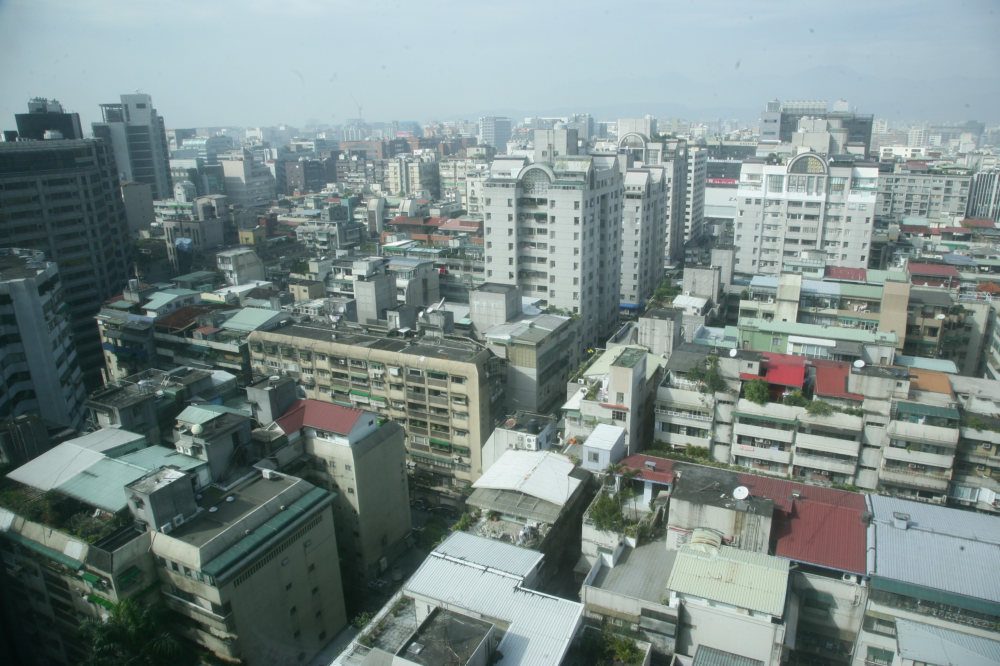

| 2025/2/21 理周周報 |
|---|
 |
 |
 |
|
|---|---|
 |
山姆大叔偷瞇牌 解讀川普袖裡乾坤 重建商機、機器人、蘋概股 |
| 「整個世界就是我的舞台，整個世界就是我的戰場」，這一話用在川普身上一點也不為過，上任一個月以來，關稅議題、俄烏停火牽動全球政經和股市，全球圍繞著他打轉，過去心心念念的是黃仁勳、現在心心念念的是川普。川普關稅大刀舉起，嚇得「積友友」七上八下，揚言復活節前結束俄烏大戰，重建概念股蠢蠢欲動，鋼鐵、線纜、水泥與散裝航運指標股蓄勢醞釀…閱讀更多 | |
 |
機器人概念股 第二季續旺 |
| #會員獨享 3月初不但有2025世界行動通訊大會(MWC)，國內還有工具機大展，相關機器人概念族群有機會再展風華，特別是業績亮眼還沒大漲的低基期潛力股，值得密切追蹤。AI開發成功與邊緣應用普及，加速AR/VR、機器人、無人機及自駕車等應用快速落地，並進一步提早實現商品化的終端利用，而在實現前述AI邊緣應用商品化的過程，除相關概念族群股普遍受惠，也實質反映…閱讀更多 | |
| 懂投資 股票 | 懂投資 股票 | 懂投資 ETF | 聊理財 | |||
|---|---|---|---|---|---|---|
| 今(20)日台股大盤指數向下震盪，權值股表現不佳，不過觀察盤面發現，重電族群竟發起全面進攻，亞力(1514)亮燈漲停…閱讀更多 | 藥華藥(6446)利空持續發酵，早盤一度大跌近8%，恐慌賣壓明顯，也連帶拖累康霈*(6919)與保瑞(6472)，保瑞更一度大跌…閱讀更多 | 國泰永續高股息ETF(00878)自蛇年開市以來表現亮眼，三大驚奇。首先，受台股開紅盤下跌及除息話題帶動，2月19日單日成交量… 閱讀更多 | 被稱為「人工智能之父」的英國傑出科學家艾倫．圖靈(Alan Turing)1950年在論文中拋出世紀之問，機器能思考嗎？為了回答問題…閱讀更多 |
 |
 | |
|---|---|---|
| 從房市價增量縮趨勢 洞悉房產業規模逐漸萎縮危機 | 限貸令緊箍咒 35萬棟恐成難以跨越的坎 | |
| 台灣房市歷經五十年六大循環洗禮，不動產業依隨台灣經濟增長脈絡而不斷前進，前三大循環價量齊揚，房價增長二十倍以上。1990年起第四循環是台灣工業火車頭地位，由建築業轉型為資訊代工業的起源，在資訊代工產業鏈崛起同時，傳統產業西進，雙雙創造台灣經濟發展潛力… 閱讀更多 | 2025年一開年，台灣房市移轉棟數跌幅達二成以上，雖是「非戰之罪」，但央行打房鍘刀隨伺在旁，限貸令緊箍咒又難解，未來前景可說「太難了」！去(2024)年屬於「驚濤駭浪」的台灣房市終於落幕，根據內政部的統計，全年共有35萬餘棟的移轉量，再創近十一年新高，但此榮景… 閱讀更多 | |
 |
走進每一個角落 南投幸福GO解決偏鄉交通問題 |
|---|---|
| 南投縣鹿谷鄉一對陳姓老夫婦，每天都會參加日照中心的課程，過去都是依賴孩子們開車接送往返，自從南投縣幸福巴士開辦以來，老夫婦每天都搭幸福巴士前往，不但減輕家人的負擔，更減少了等車的時間，生活比以前輕鬆自在。還有一位鄉親透露，以前外出辦事，光是等車、轉車就要花上半天的時間，現在有了幸福巴士，幾乎節省一半的時間，其他時間可以自由安排，也不用擔心… 閱讀更多 | |
 |
 |
 |
||
|---|---|---|---|---|
| 訂閱1年期雜誌 免費送高股息APP+日報一個月 | 免費實體講座報名：2025年Q2台股操作策略大解析 | 免費試閱理周飆股日報 | ||
| 點我購買 | 點我報名 | 點我加入理周寶官方LINE 免費試閱 |